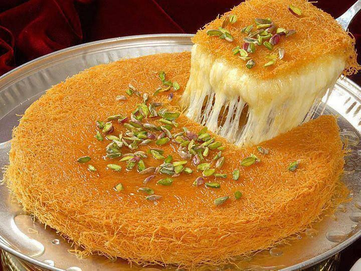
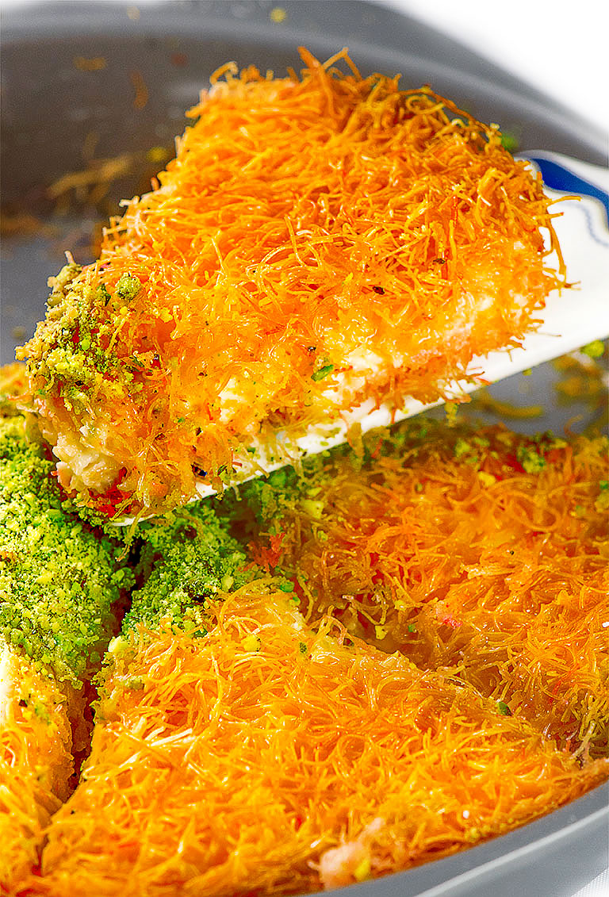

- Turkey -
Cuisine
Kunafa Recipe

Künafa is a popular Turkish dessert. It slightly reseembles baklava and it certainly has the same sweetness, however unlike bakalava, it contains cheese. Layers of shredded wheat, cheese and pistachios are drowned in a syrup and baked in a sunken dish. The dessert is served straight from the oven, to make sure the cheese is bubbling and stringy.

I have copied my favourite recipe below but I have also linked it here.
Ingredients
- 3/4 cup Milk
- 1/2 can condensed milk
- 1 3/4 cup heavy cream
- 200g Kunafa dough
- 1 1/2 tbsp sugar
- 2 tbsp cornstarch
- Butter
- 1/2 cup Pistachio powder
Method
- Preheat your oven to 180 C/ 356 F with the rack on the bottom of the oven.
- Kunafa crust. Coat your 22 cm/ 9 inch baking tray with some butter/
- Shred semi-frozen kunafa dough into 1.5 inch/ 4 cm long pieces over a large bowl. Add the remaining butter and mix with kunafa shreds to coat evenly. Transfer half of the dough to the tray and press firmly ,lining sides of the tray so it will hold the cream filling and prevent it from burning.
- Making cream filling. In a medium saucepan heat milk and heavy cream; then add sugar and cornstarch and whisk until completely dissolved over medium heat. Bring to a boil, stirring constantly. Boil until the mixture thickens. Remove from the stove and pour over the crust, spread with a spatula.
- Top with the remaining kunafa shreds evenly and bake 30-40 minutes or until golden.
- Remove kunafa from the oven and pour condensed milk, covering the entire surface. You might not need the whole can.
- Garnish with ground pistachio.
- Allow kunafa rest for 10-15 min to absorb the condensed milk.
- Serve warm.